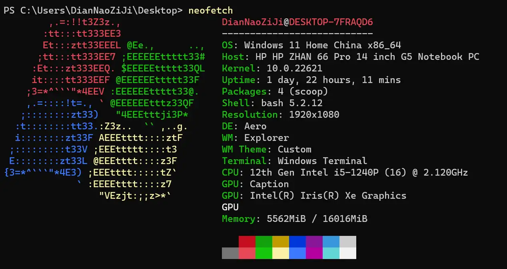
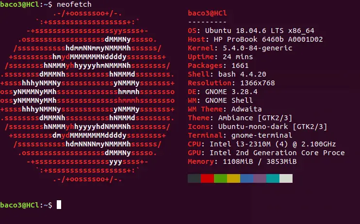
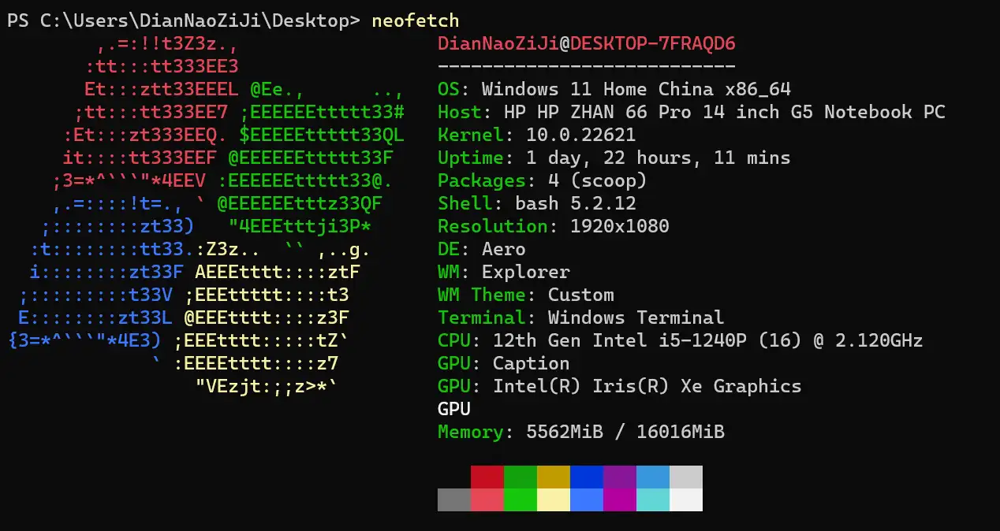
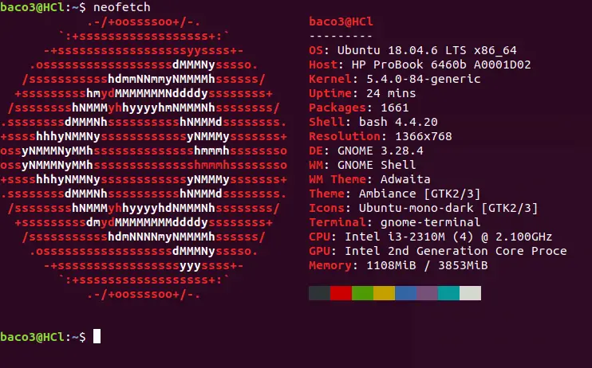

Scoop
现在已经跟新笔记本混的很熟了：
好像 Win11 的图标还没有，它竟然拿了 Win7 时代的图标来代替。
同时还有一台老笔记本，拿来装了 Ubuntu 18.04，主要用来整活。这种老笔记本最大的优势就是皮实。
没怎么自定义，懒癌犯了。
现在已经跟新笔记本混的很熟了：
好像 Win11 的图标还没有，它竟然拿了 Win7 时代的图标来代替。
同时还有一台老笔记本，拿来装了 Ubuntu 18.04，主要用来整活。这种老笔记本最大的优势就是皮实。
没怎么自定义，懒癌犯了。